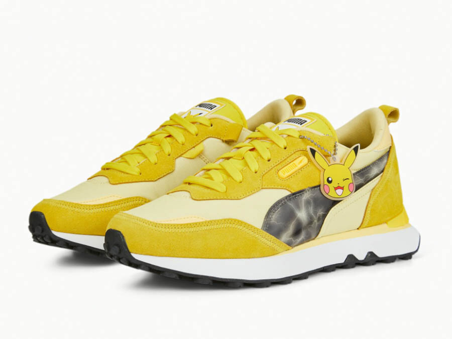
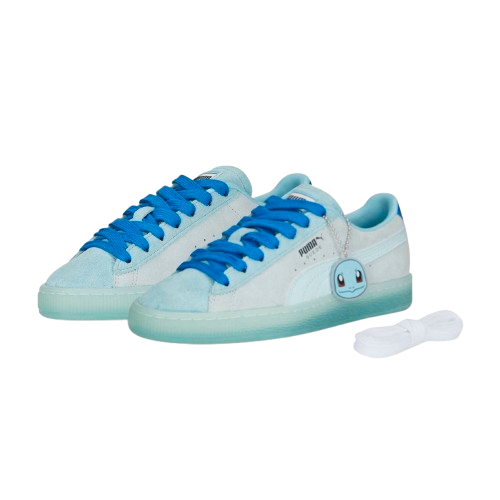
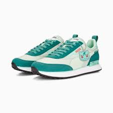
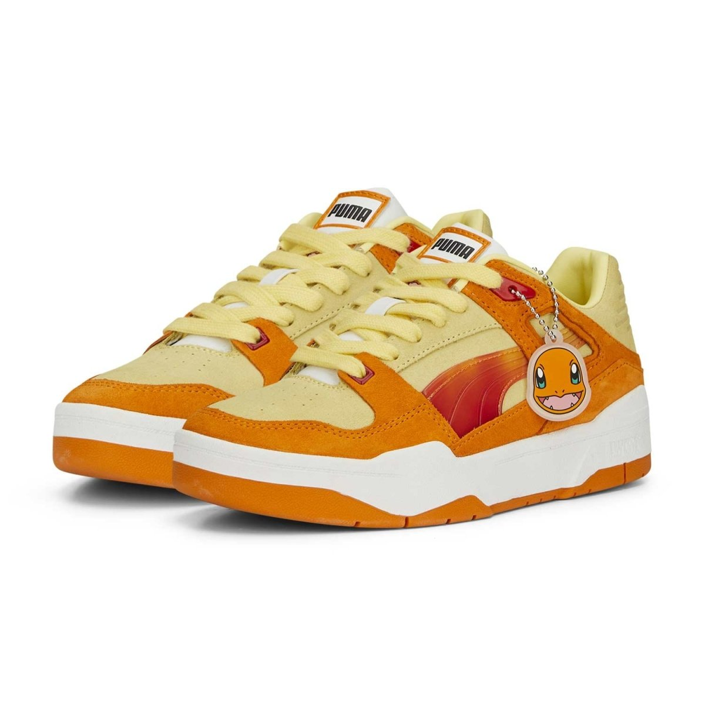

Cadastrar-se
História
PUMA X POKÉMON

Pikachu
inspirado no Pikachu é vibrante, usando uma paleta de amarelo que representa a cor icônica do Pokémon. Esse modelo costuma trazer detalhes como raios ou gráficos elétricos.

Squirtle
O famoso Pokémon do tipo água, O design geralmente inclui elementos e cores que remetem ao visual icônico do Squirtle: tons de azul claro e detalhes em branco e marrom, que remetem à sua carapaça e coloração.

Bulbasaur
inspirado no Bulbasaur traz um design que reflete as características mais marcantes do Pokémon. Ele apresenta uma paleta de tons de verde, com detalhes que lembram folhas e a textura da planta em suas costas.

Charmander
inspirado no Charmander incorpora elementos que capturam o visual e a personalidade calorosa do Pokémon de fogo. A cor predominante é o laranja, refletindo a pele do Charmander, com detalhes em vermelho e amarelo que fazem referência à chama em sua cauda.